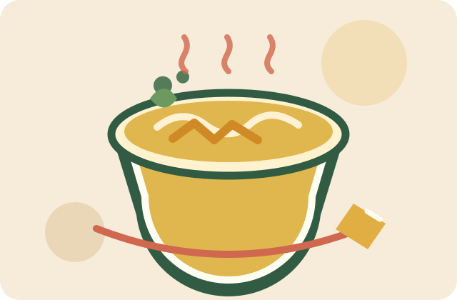
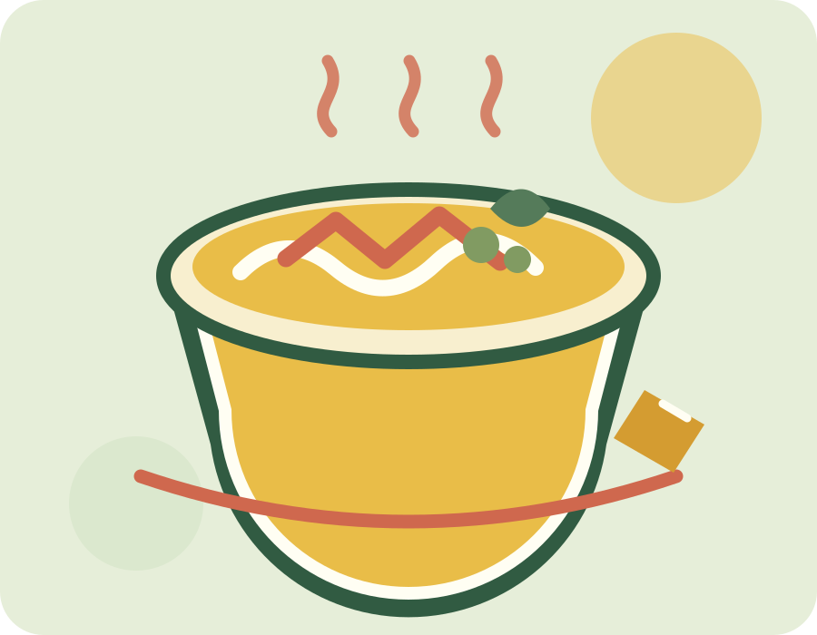

Dimasak hangat setiap hari
Satu mangkuk,
seribu alasan
untuk kembali.
Kenalan dengan soto rumahan ala Mang Iqbal — kuah gurih, racikan rempah, dan pilihan isian yang bikin waktu makan terasa lebih istimewa.
Hangat
tiap hari
tiap hari

Racikan hangat · Rasa akrabRASA AKRAB, REMPAH PILIHANEST. 2026
Kenapa Soto Mang Iqbal?
Karena makanan enak bukan cuma soal kenyang. Ada kuah hangat, racikan rempah, dan rasa nyaman yang selalu ingin ditemukan lagi.
Pilihan pelanggan
Yang sering jadi andalan.


“
Semangkuk soto yang baik selalu punya cara sederhana untuk membuat hari jadi lebih baik.
— Dapur Mang IqbalSudah lapar?